Anciennement connue sous le nom de Ceylan, le Sri Lanka, perle de l’Océan Indien, est une île fascinante au cœur de l’océan Indien.
Terre de thé, de plages idylliques et de temples millénaires, elle offre une palette de paysages époustouflants : montagnes verdoyantes, cascades, rizières en terrasses et forêts tropicales.
La population locale, chaleureuse et accueillante, partage fièrement sa culture et ses traditions, de la cuisine parfumée aux festivals colorés. Voyager au Sri Lanka, c’est découvrir un pays où l’histoire, la nature et l’aventure se mêlent harmonieusement.


Getting There: Departing from Barcelona, after a stopover in Amsterdam, the final destination is in Colombo la Sri Lankan capital.
Jet lag : + 3h30 in summer, + 4h30 in winter
NB :French passport valid for more than 6 months after the return date Mandatory visa (ETA form).
Monney: monney is "roupie SL" (LKR).
Sur l'île de Srilanka, la vie côtière tourne autour de la pêche... Dès l’aube, les bateaux colorés quittent les villages de pêcheurs, leurs filets prêts à capturer la richesse de l’océan. Les familles s’activent sur le port : réparer les filets, trier le poisson, préparer les ventes.
La pêche n’est pas seulement un métier : c’est un mode de vie, une tradition transmise de génération en génération. Ici, la mer façonne le rythme des journées, les repas.
Dans ces villages côtiers, solidarité et partage sont essentiels : les pêcheurs s’entraident pour tirer les filets, les voisins se rassemblent pour vendre ou cuisiner le poisson. La mer est généreuse, mais elle exige respect et patience.


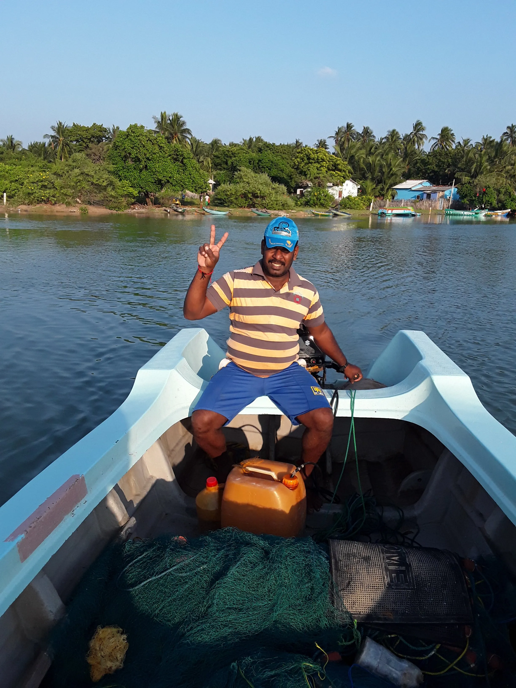
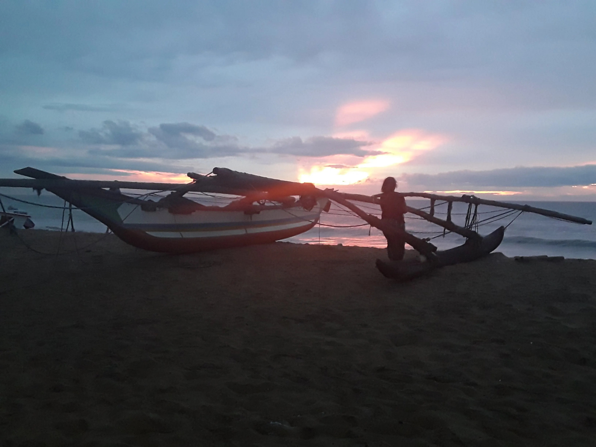
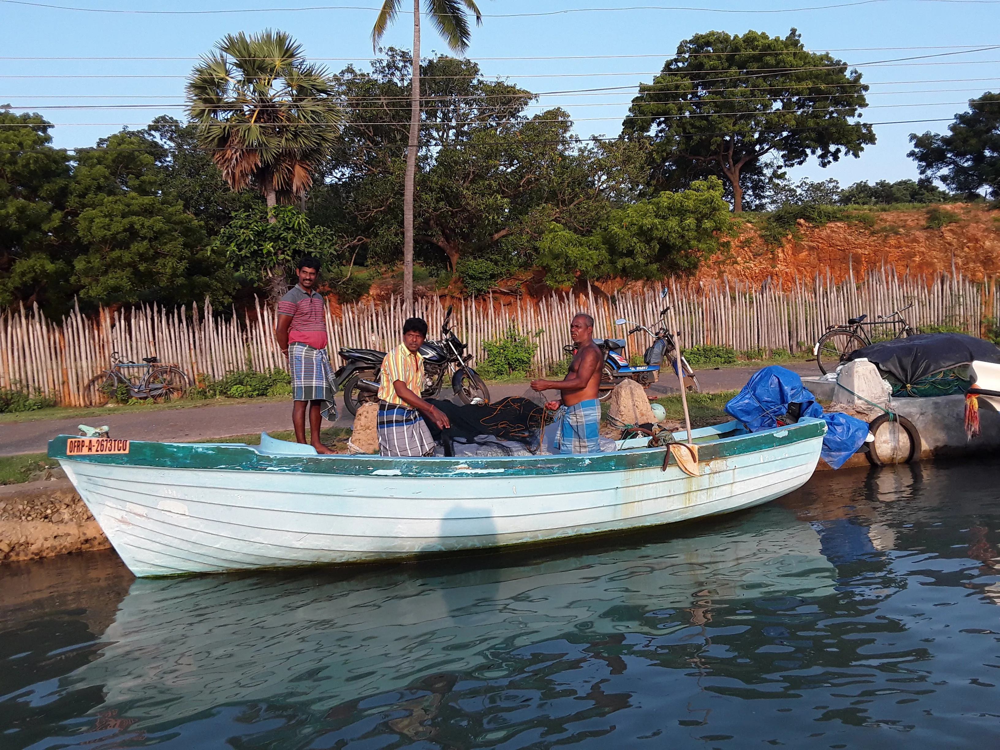


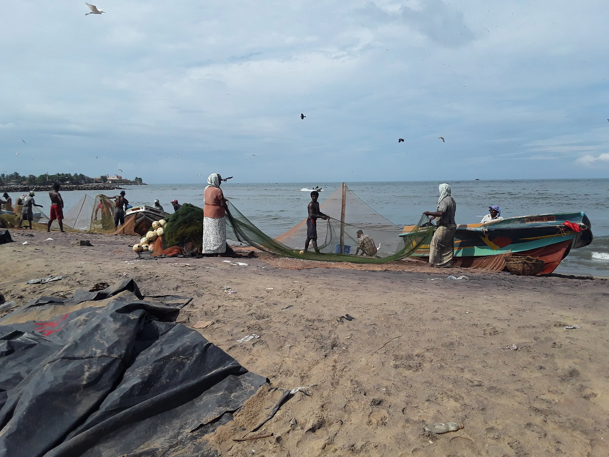
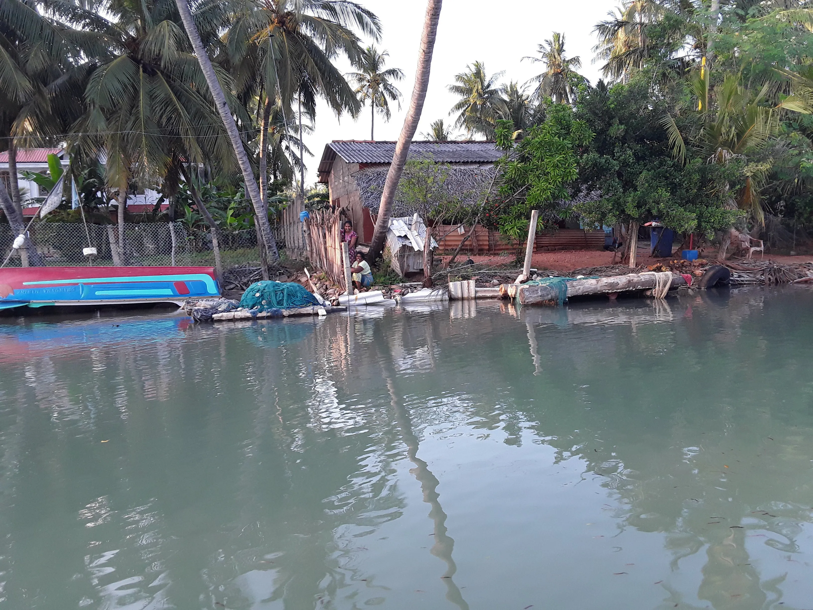
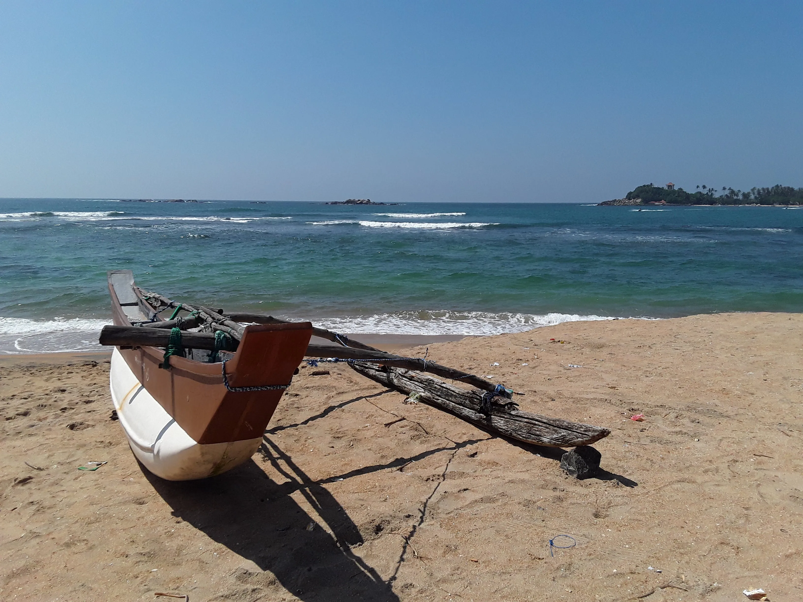
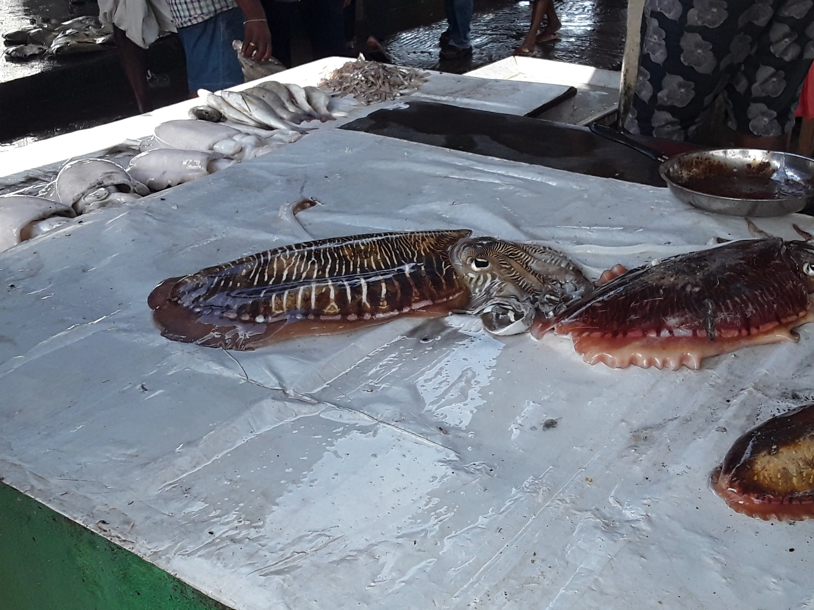
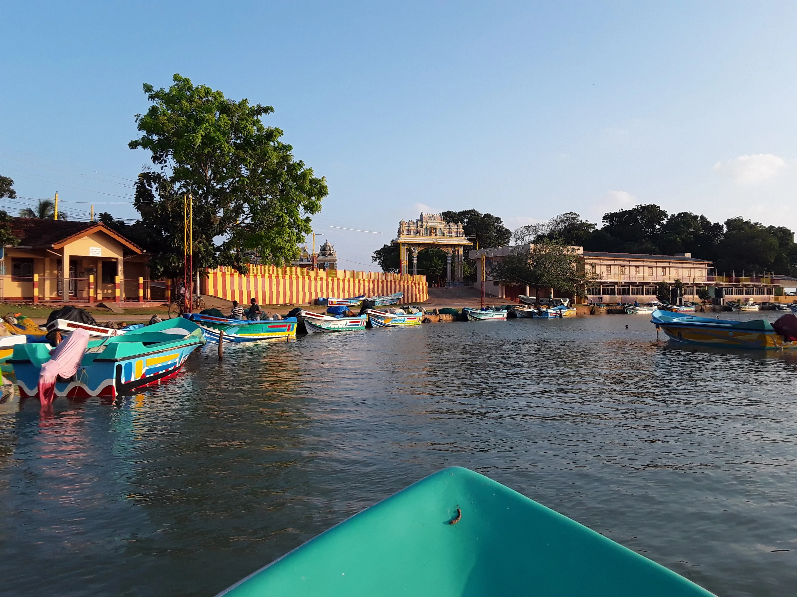
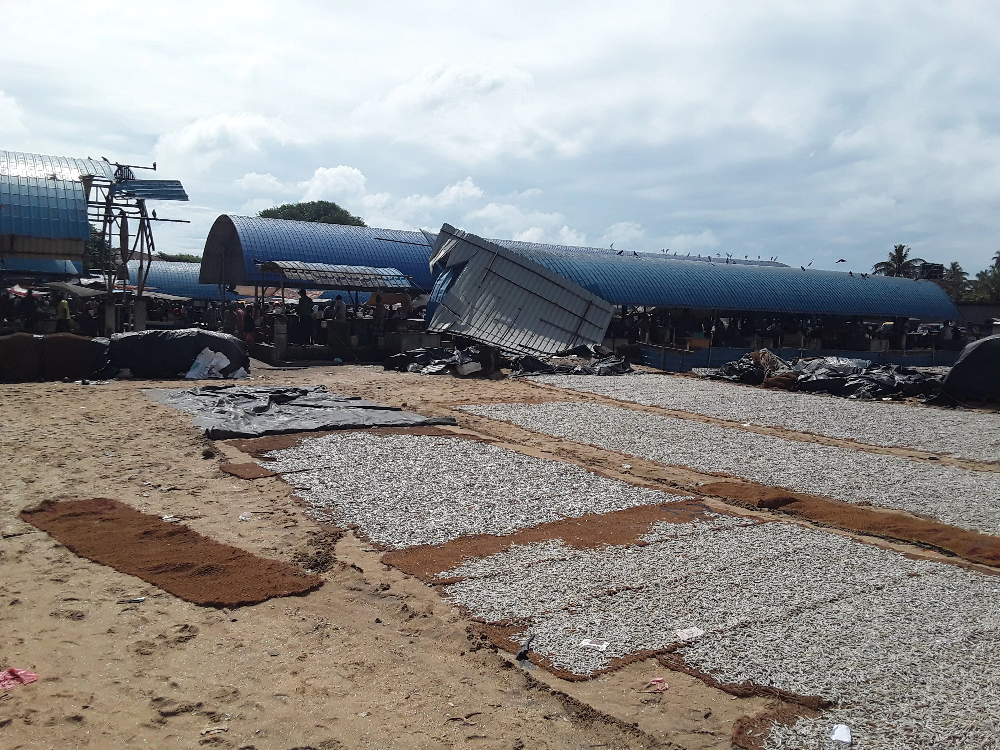
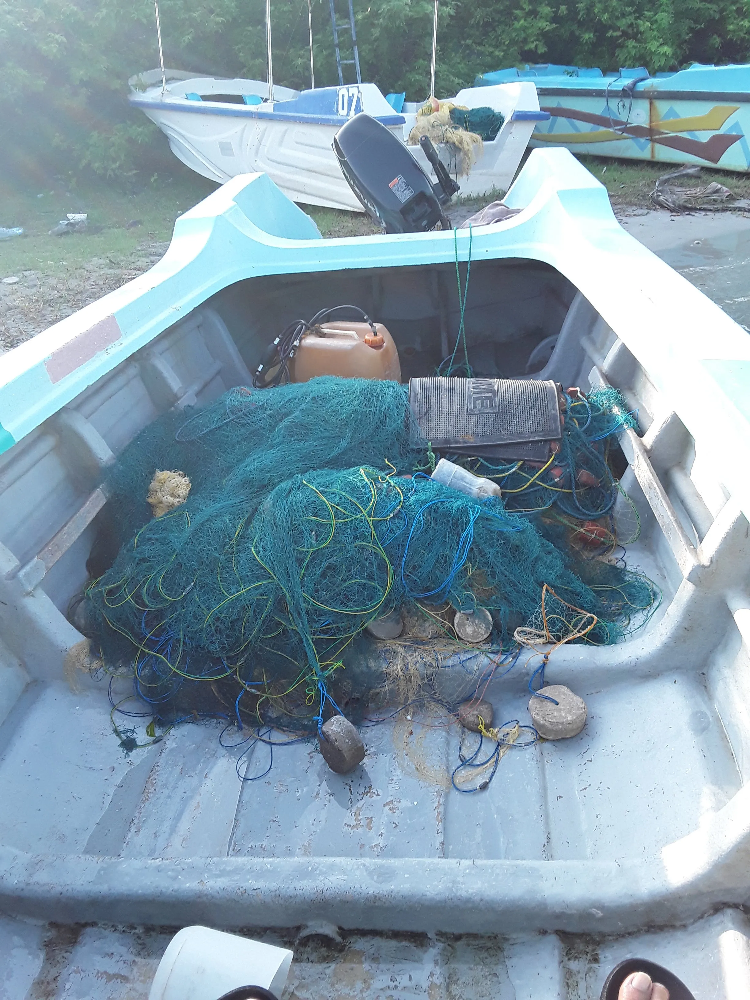
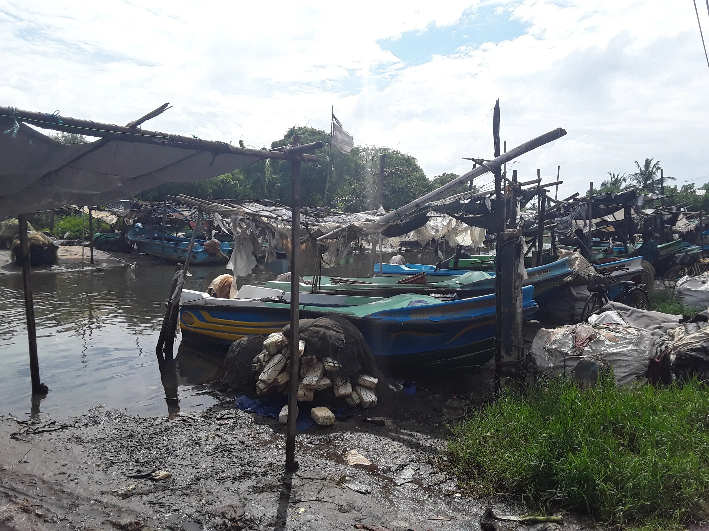
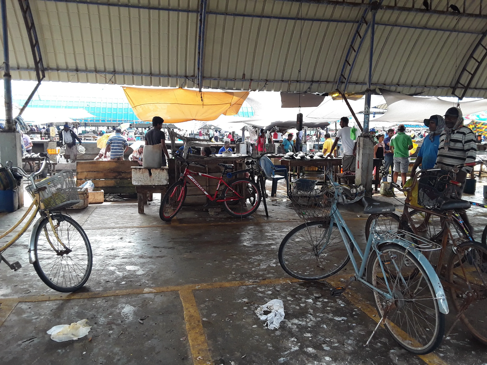
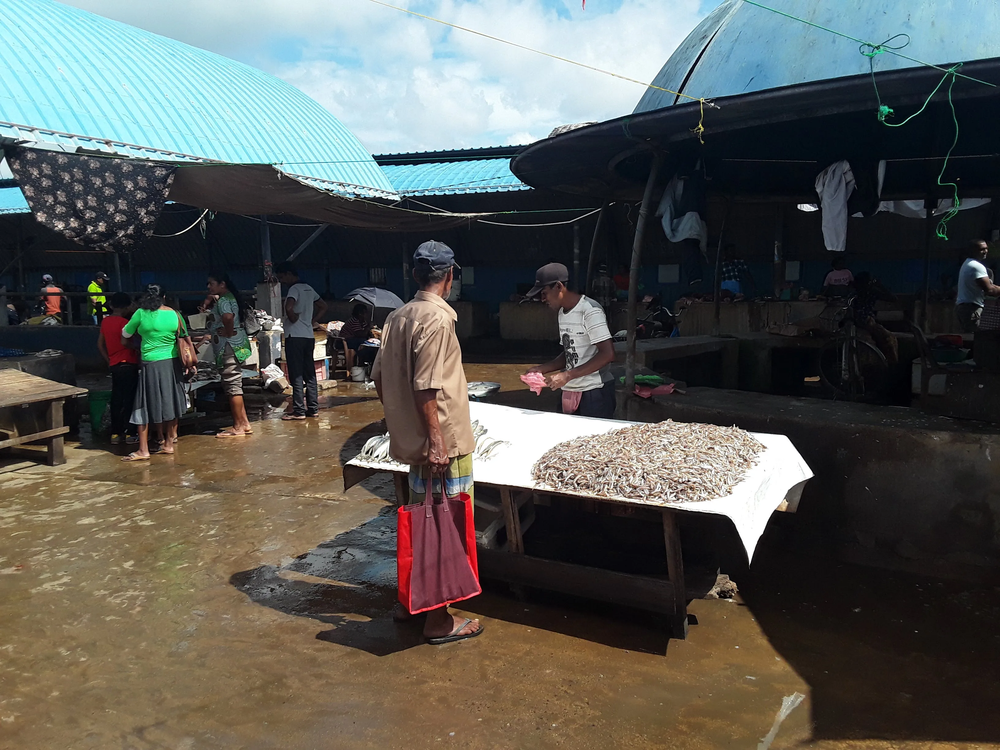
Les premières plantations de thé au Sri Lanka ont été introduites au XIXᵉ siècle par les colons britanniques, après que les plantations de café aient été ravagées par la maladie.
Rapidement, les collines verdoyantes du centre du pays se sont transformées en un patchwork de plantations où le thé, symbole de richesse et de savoir-faire, a prospéré.
Aujourd’hui, le thé n’est pas seulement une culture : il fait partie de l’âme du pays. Des cueilleuses dans les plantations aux cérémonies de thé dans les maisons, chaque feuille raconte une histoire de travail, de tradition et de passion.


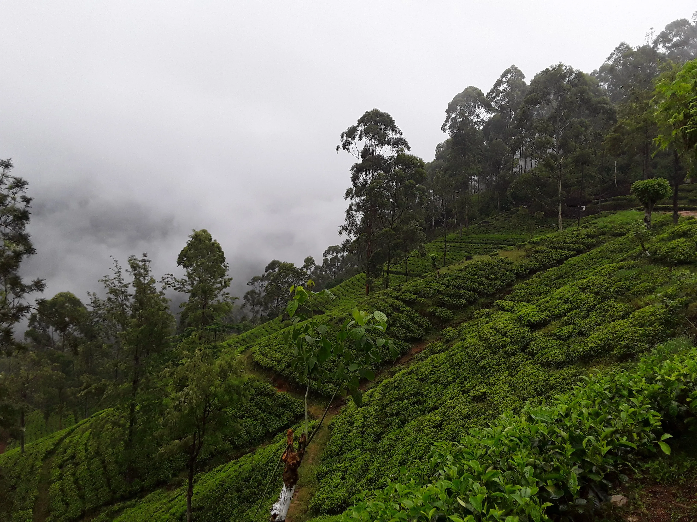
L'Adam’s Peak, au Sri Lanka, à faire de nuit pour aller admirer le lever de soleil, sauf que matin là ,la brume ne s'était pas levée. l’aube se lève sur des marches ancestrales.
Les pèlerins, de toutes religions, gravissent la montagne pas à pas, aidant ceux qui fatiguent, partageant encouragements et sourires. Les ombres des pèlerins dansent sur les marches, symbole de foi, de persévérance et de solidarité.
Ici, chaque pas n’est pas seulement un effort physique : c’est un acte de communion, avec la montagne, avec les autres, avec soi-même., ou la solidarité les uns aveles autres est de mise.


Le Sri Lanka est un véritable pays des temples, où chaque pierre raconte une histoire. Des stupas immenses d’Anuradhapura aux cavernes peintes de Dambulla et Polonnaruwa, au Temple de la Dent à Kandy, chaque site est un voyage à travers le temps et la foi.
Ici, les temples ne sont pas seulement des lieux de culte : ils sont le cœur de la culture sri-lankaise, un mélange d’art, d’histoire et de spiritualité. En les visitant, on ne voit pas seulement des bâtiments : on ressent la dévotion et la vie quotidienne des pèlerins, le murmure des prières, le parfum de l’encens, et l’âme d’un peuple fier de son héritage.
Le Sri Lanka, c’est donc plus qu’une île : c’est un voyage au cœur de la foi et de la tradition,.